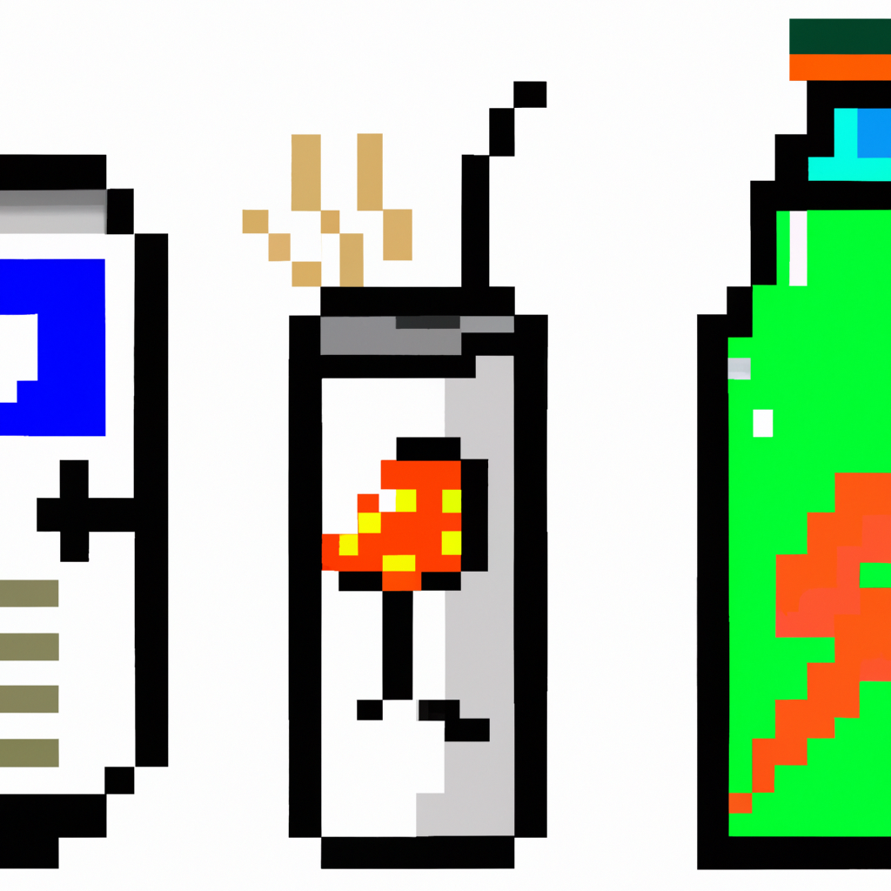

Energy Drinks and Health Issues
Energy drinks have become increasingly popular in recent years, but are they really as safe as they seem? In this blog post, I’ll be discussing the potential health risks associated with these drinks, as well as some tips for staying healthy while enjoying an occasional energy drink.
First, it’s important to understand what exactly is in an energy drink. Most energy drinks are made with caffeine, taurine, and other stimulants intended to give the drinker an energy boost. While these ingredients can be beneficial in small doses, they can be dangerous in large doses. The amount of caffeine in energy drinks can vary greatly, but most contain more than a cup of coffee. This can lead to rapid heart rate, jitters, and other side effects.
In addition to caffeine, energy drinks also contain large amounts of sugar. This can lead to an increased risk of weight gain and diabetes. Some energy drinks also contain artificial sweeteners, which can have their own set of side effects.
It’s also important to remember that energy drinks are not regulated by the FDA. This means that the amount of caffeine, sugar, and other ingredients in the drink can vary from brand to brand. It’s important to pay attention to labels and do your research before purchasing an energy drink.
Finally, it’s important to keep in mind that energy drinks can be addictive. Just like with any other substance, it’s important to be aware of how much you’re drinking and how often. If you find yourself relying on energy drinks to get through the day, it may be time to take a break and look into healthier alternatives.
Overall, energy drinks can be a fun and tasty way to get an energy boost, but it’s important to be aware of the potential health risks. Pay attention to labels, and try to limit yourself to one or two drinks per day. With the right precautions, you can enjoy the occasional energy drink without worrying about your health.